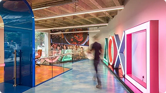

Sobre
Mais do que um console, o PlayStation se ergue como um grande portal na paisagem cultural moderna. É um ponto de convergência onde a tecnologia não serve apenas ao entretenimento, mas à ambição humana de criar, explorar e sentir. Desenvolvido pela Sony, sua narrativa é a de um pioneiro que, desde o seu surgimento, ousou reescrever as regras do possível, transformando a sala de estar em um palco para epopeias interativas. Sua gênese foi um divisor de águas, um rompimento audacioso com os paradigmas estabelecidos. Ao abraçar uma mídia mais vasta e acessível, o primeiro equipamento não apenas amplificou o poder dos desenvolvedores, mas democratizou a própria criação de universos digitais. Foi o convite para que uma nova geração de artistas e contadores de histórias pegasse o controle, dando origem a um ecossistema de gêneros que florescia em liberdade. Ele plantou a semente de uma filosofia que se tornaria sua marca registrada: a ousadia de imaginar. A consolidação dessa visão veio com a sua segunda encarnação, que transcendeu radicalmente a função de um mero aparelho de jogos. Ele se infiltrou no cotidiano das famílias como o coração pulsante da sala de estar, um centro de entretenimento total. Foi quando a marca percebeu que seu domínio não era apenas sobre pixels e polígonos, mas sobre a experiência compartilhada, o momento em que a magia digital se entrelaça com a vida real. Este foi o alicerce de um império, construído não por hardware, mas pela memória afetiva de milhões. O terceiro capítulo dessa saga foi uma lição de resiliência e visão de futuro. Diante de desafios, a marca dobrou a aposta na sofisticação, introduzindo uma peça fundamental em seu legado: a teia digital que conecta almas. Ao tecer uma rede social robusta e elegante em torno dos jogadores, transformou atos solitários em cerimônias coletivas. A ideia de comunidade foi institucionalizada, criando um ciclo virtuoso de descobertas e rivalidades amistosas que solidificou um ecossistema, não um simples produto. A quarta era representou um retorno triunfante à essência pura da arte interativa. Foi um renascimento focado na primazia da experiência sensorial e narrativa. Seus estúdios internos, operando como ateliês de maestros, elevaram a narrativa digital a uma forma de arte contemporânea, onde cada frame era uma pintura e cada diálogo, um verso. Esta geração não vendeu apenas um aparelho; vendeu emoções em alta definição, a promessa de ser arrancado do comum e transportado para o extraordinário. Hoje, a fronteira atual da marca é um monumento à imersão sensorial absoluta. Seus instrumentos são desenhados não para serem vistos, mas para serem sentidos. Através de respostas táteis e tempos de transição que desafiam a percepção, a barreira entre o físico e o digital se dissolve. A estratégia expandiu-se, tornando suas sagas lendárias em fenômenos transmidiáticos, provando que as grandes histórias nascidas em seu ventre são universais o suficiente para ressoar em qualquer tela.
Fotos da empresa

Ken Kutaragi
Ken Kutaragi consagrou-se não apenas como um enovador brilhante, mas como o arquiteto de uma das mais ousadas revoluções no universo do entretenimento interativo. Nascido em Tóquio, sua formação em Engenharia Elétrica, concluída em 1975, foi o alicerce para uma trajetória marcada pela audácia e pela capacidade de transformar conceitos abstratos em realidades tecnológicas. Ingressando nos laboratórios de pesquisa e desenvolvimento da Sony, Kutaragi rapidamente destacou-se por seu talento incomum como solucionador de problemas, demonstrando uma habilidade singular para desvendar complexidades em protótipos de televisão e rádio. Sua mente inquieta e visionária impulsionou-o a explorar novas fronteiras tecnológicas, contribuindo significativamente para o desenvolvimento de projetos pioneiros envolvendo telas de cristal líquido e câmeras digitais. Contudo, essas conquistas seriam apenas o prelúdio de sua maior obra. No início da década de 1990, Kutaragi concebeu um projeto audacioso: um sistema de videogame batizado de "Play Station", idealizado inicialmente como um periférico de CD-ROM para o Super Nintendo. Esse visionário enxergou, antes de muitos, o potencial transformador da mídia óptica para expandir os limites criativos e técnicos dos jogos eletrônicos.